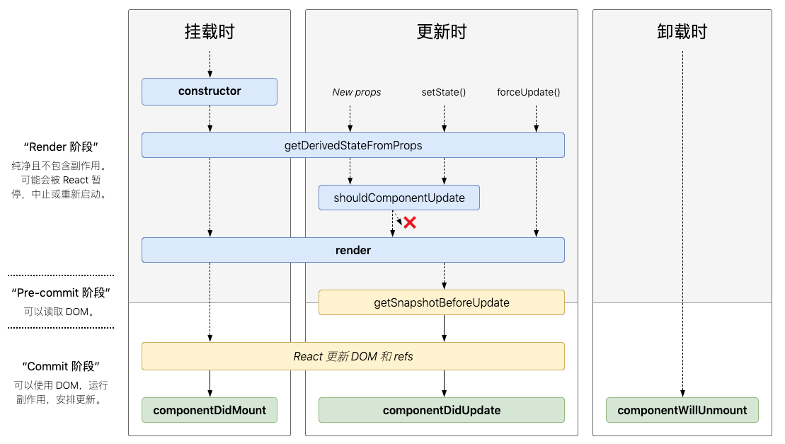

引言
React 是一个用于构建 UI 的 JavaScript 库，它有声明式、组件化的特点。使用 JSX 的语法可以非常轻松地编写各种组件，而基于各种组件又可以构造出更加复杂的前端页面。
基础篇
JSX
- JSX 可以很好地描述 UI：
const element = <h1>Hello, world</h1> - React 中认为渲染逻辑本质上和 UI 逻辑天然耦合，并没有认为地将标记与逻辑分类到不同文件，而是将它们放在组件这种松散耦合单元中，实现关注点分离
- JSX 本身也是表达式，可以在
{}中使用任意 JavaScript 的功能。在进行编译后，JSX 会被转换成普通的 JavaScript 函数调用，并对其取值后得到 JavaScript 对象 - JSX 可以防止注入攻击，ReactDOM 在渲染所有输入内容前，默认会进行转义
元素渲染
- 与真实的浏览器 DOM 元素相比，React 元素是非常轻量级且创建开销很小的普通对象，ReactDOM 负责更新 DOM 保持与 React 元素一致
- 渲染元素：
ReactDOM.render(element, container) - ReactDOM 会将元素及其子元素与之前的状态对比，只进行必要的更新保证 DOM 达到预期状态
组件
组件的定义有两种方式：
1
2
3
4
5
6
7
8
9
10
11// 函数组件
function Welcome(props) {
reuturn <h1>Welcome</h1>
}
// 基于 ES6 class 定义的组件
class Welcome2 extends Component {
render() {
return <h1>Welcome</h1>
}
}每个组件都有自己的属性（props）和状态（state）
- 组件的
props是只读的。React 组件必须要像纯函数一样保护它们的 props 不被修改
状态 state
- 组件的
state是组件私有的，且完全受控于当前组件 - 除了在构造函数中可以直接给
this.state赋值外，不要直接修改state，否则不会渲染组件，要使用setState()更新状态 this.props和this.state可能是异步更新，不要依赖它们的值进行下一个状态更新。示例如下：1
2
3
4
5
6
7
8
9// 错误的做法，这种可能无法得到预期结果
this.setState({
counter: this.state.counter + this.props.incr
}
// 正确的做法，使用一个箭头函数
this.setState((state, props) => {
counter: state.counter + props.incr
}))不管是父组件还是子组件都无法知道某个组件有无状态，且也不会关心是函数组件还是 class 组件。数据流动是单向向下的，从某个组件
state产生的任何数据或 UI 只会影响树中低于它们的组件
事件处理
- React 事件命名是 camelCase 风格，而非像 HTML DOM 中纯小写的风格
- 如果想要阻止事件的默认行为，必须显式使用
e.preventDefault()；这里的e是 React 根据 W3C 规范定义的合成事件，无需担心跨浏览器兼容问题 - React 中自定义的方法默认不会绑定
this，所以有多种方式可以进行绑定：- 常规：在构造函数中使用
this.handleChange = this.handleChange.bind(this) - 推荐：使用
public class fields语法：handleChange = () => {} - 在调用时，使用箭头函数或者
bind绑定（注意，这种可能会带来性能问题，每次都会创建函数，如果是传递给子组件的，还可能会导致子组件重新渲染）
- 常规：在构造函数中使用
列表 & Key
- 在列表元素或者组件中，必须要指定 Key。而如果没有设定，则默认使用索引。但是使用索引可能会带来性能问题和状态问题
- Key 并不需要全局唯一，只是在相邻节点之间需要保持唯一即可
- Key 会被传递给 React，但不会传递给组件
表单
- 受控组件：把 HTML 表单元素和 React state 结合起来，让渲染表单的 React 组件还控制用户输入过程中表单发生的事情
- 在受控组件上指定 value 的 prop 可以防止用户更改输入
其它
- 通常，如果多个组件反映相同的数据变更，可以将状态提升到最近的公共父组件
- 组合优于继承
- 有些组件无法提前知晓它们子组件的具体内容，可以通过
props.children获取子组件渲染
高级篇
Context（此 Context 有点特殊）
- 虽然可以通过
props将属性从父组件一级级传递到子组件树，但这样毕竟比较繁琐。而有些比较全局的配置（如主题、地区等），则可以通过Context进行共享，方便组件树访问这些全局配置 - 创建
context：const ThemeContext = React.createContext(‘light’)` 示例如下：
1
2
3
4
5
6
7
8
9
10
11
12
13
14
15
16
17
18
19
20
21
22
23
24
25
26import React from 'react';
const ThemeContext = React.createContext('light')
class Button extends React.Component {
// 指定要读取的 Context 类型
// React 会自动查找最近的 theme provider
// 然后使用它的值
static contextType = ThemeContext
render() {
return (
// 使用 `this.context` 可以获取值
<button className="Button">{this.props.text} + {this.context}</button>
)
}
}
function ToolBar(props) {
return <Button text={props.text}></Button>
}
function App() {
return (
// 使用 Provider 指定 ctx value
<ThemeContext.Provider value="yellow">
<ToolBar text="工具按钮"></ToolBar>
</ThemeContext.Provider>
);
}
export default App;Context 使用会导致组件的复用性变差，会依赖 Context。如果只是想要避免层层传递属性，可以使用组件组合的方式
API
createContext:const myCtx = React.createContext(defaultValue)- 对于订阅了上述 ctx 的子组件，会自动在离自己最近的匹配 Provider 处获取设置的值
- 如果未能找到 Provider，则使用 defaultValue
Provider- 允许消费组件订阅 context 的变化
- 可以传递 value 给消费组件，可以嵌套
- Provider value 变化时，内部消费组件也会重新渲染
- Provider 及消费组件不受
shouldComponentUpdate函数限制
contextType- 挂载在
class对象上，指向创建的 Context 对象 - 可以在任意生命周期通过
this.context访问到最近 Context 的值
- 挂载在
Consumer：订阅 context 变更1
2
3<MyContext.Consumer>
{value => /* do stuff */}
</MyContext.Consumer>Context 使用了 reference identity 来决定何时进行渲染，但也存在陷阱。当 Provider 父组件重新渲染时，也可能会导致消费组件意外被渲染
Fragment
- 常见模式是一个组件要返回多个元素，使用
Fragment可以将子列表分组，且无需向 DOM 添加额外节点1
2
3
4
5
6
7
8
9
10
11
12
13
14
15
16
17
18
19
20
21
22
23
24
25
26
27function Column(props) {
return (
<>
<td>hello 1</td>
<td>hello 2</td>
<td>hello 3</td>
</>
)
}
function Row(props) {
return (
<>
<tr><Column></Column></tr>
<tr><Column></Column></tr>
<tr><Column></Column></tr>
</>
)
}
function Table(props) {
return (
<table>
<Row></Row>
</table>
)
}
高阶组件（High Order Component, HOC）
- HOC 是 React 中基于组合特性而形成的设计模式，是一种复用组件逻辑的技巧
- HOC 的参数是组件，返回值是新组件的函数：
const NewComponent = hoc(WrappedComponent) - 面向切面编程，替代 Mixin 模式；纯函数，无副作用
约定：HOC 应该透传与自身无关的 props，使用类似下面的方式编写
render：1
2
3
4
5
6
7
8
9
10
11
12function logProps(WrappedComponent) {
return class extends React.Component {
render() {
const {level, ...props} = this.props
console.log(level)
console.log(props)
return (
<WrappedComponent level={level} {...props}></WrappedComponent>
)
}
}
}约定：最大化可组合性
1
2
3
4
5
6
7// compose 达到的效果就是：withRouter(connect(componentSelector)(WrappedComponent)))
const enhance = compose(
// 单纯的 HOC
withRouter,
connect(componentSelector)
)
const EnhancedComponent = enhance(WrappedComponent)约定：返回清晰的名称，便于调试。命名习惯：HOCName(wrappedComponentName)
1
2
3
4
5
6
7
8
9
10
11
12
13
14
15function logProps(WrappedComponent) {
class WithLogComponent extends React.Component {
render() {
return (
<WrappedComponent {...props}></WrappedComponent>
)
}
}
WithLogComponent.displayName = `WithLogComponent(${getDisplayName(WrappedComponent)})`
return WithLogComponent
}
function getDisplayName(c) {
return c.displayName || c.name || 'Component'
}注意：
- 不要在
render()中使用 HOC，避免 React 渲染性能问题（不是更新子树，而是卸载旧子树，挂载新子树，且导致组件状态也会丢失）。如果的确需要动态调用 HOC，可以在生命周期方法或构造函数中进行 - 静态方法需要显式拷贝，可以使用
hoistNonReactStatic函数拷贝所有非 React 静态方法 - Ref 不会被传递
- 不要在
PropTypes
- 对组件 props 类型进行检查，配置
propTypes属性即可 - 考虑到性能问题，仅在开发模式下生效
- 可以配置
defaultProps设定默认值
生命周期图谱

合成事件（Synthetic Event）
SyntheticEvent实例是传递给事件处理函数的参数，它是对浏览器事件的包装，兼容所有浏览器，同时提供了接近原生事件的接口。当然，也提供了.nativeEvent供你获取底层事件重要的属性和方法：
boolean bubblesboolean cancelableDOMEventTarget currentTargetboolean defaultPreventednumber eventPhaseboolean isTrustedDOMEvent nativeEventvoid preventDefault()boolean isDefaultPrevented()void stopPropagation()boolean isPropagationStopped()DOMEventTarget targetnumber timeStampstring type
SyntheticEvent在完成事件回调后，其属性会无效，无法异步访问该事件
Hook
- Hook 是 React 16.8 以后新增的特性，它可以让我们在不编写
class组件的情况下使用state,props等 React 特性 - Why Hook:
- 原有的写法中，组件之间状态逻辑复用很困难。Hook 可以提取状态逻辑，单独测试和复用，并且无需修改原有组件的结构
- 复杂组件变得难以理解。Hook 会将组件中相互关联的部分拆分成更小的函数，不会强制按照生命周期划分
- 难以理解的 class。Hook 可以在非 class 的情况下使用更多的 React 特性
- Hook 可以理解为在函数组件中「钩入」React State 以及生命周期等特性的函数，并且不能再 class 组件中使用
- 使用规则：
- 只能在函数最外层调用 Hook，不要在循环、条件或嵌套函数中调用 Hook
- 只能在函数组件中调用 Hook
- 原先我们在编写函数组件时，如果需要给其引入状态，或者添加生命周期的钩子，需要转换成 class 组件。但有了 Hook 特性后，可以使用
useState和useEffect来代替了。新的写法将会更加简洁，易于抽象复用和测试
State Hook
- 使用
useStateHook 可以在函数组件中添加内部 state，React 在重复渲染时保留该 state useState返回的更新 state 的函数和this.setState行为有区别，前者不会把新旧 state 合并，而后者会- 示例：
1 | function App() { |
Event Hook
- 使用
useEffectHook 给函数组件添加操作副作用的能力。相当于 class 组件中componentDidMount,componentDidUpdate和componentWillUnmount的合体，将副作用操作都聚集到该 Hook 中 - 调用
useEffect时，就表明让 React 在对 DOM 完成更改后调用相应的副作用函数；同时可以返回一个回调函数，用于在清除时执行一些操作。React 会在组件卸载时执行清除操作 使用示例：
1
2
3
4
5
6
7
8
9
10
11
12
13
14
15
16
17function App() {
const [userInfo, setUserInfo] = useState({ username: '游客', clickCount: 0 })
useEffect(() => {
alert("当前用户信息：" + userInfo.username)
return () => {
console.log("销毁组件，重新渲染")
}
})
return (
<div>
<button onClick={() => setUserInfo({ username: 'iFaceless', clickCount: userInfo.clickCount })}>设置用户</button>
<button onClick={() => setUserInfo({ clickCount: userInfo.clickCount + 1, username: userInfo.username })}>点击计数</button>
<p>你好，{userInfo.username}</p>
<p>点击计数 {userInfo.clickCount}</p>
</div>
)
}默认情况下，useEffect 会在每次渲染后都会执行（当然可以控制），我们不用关心「挂载」和「更新」这种概念
- 与
componentDidMount和componentDidUpdate不同的是，uesEffect调度的 effect 不会阻塞浏览器更新屏幕，从而获得更好的响应速度。如果需要同步执行，则使用useLayoutEffectHook
自定义 Hook
- 自定义 Hook 需要以
use开头，这是约定，可以让 React 自动检查 Hook 是否违反相关规则